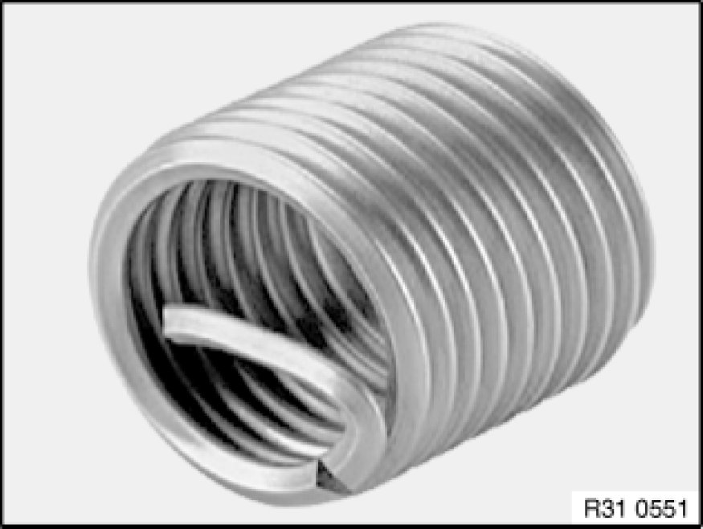
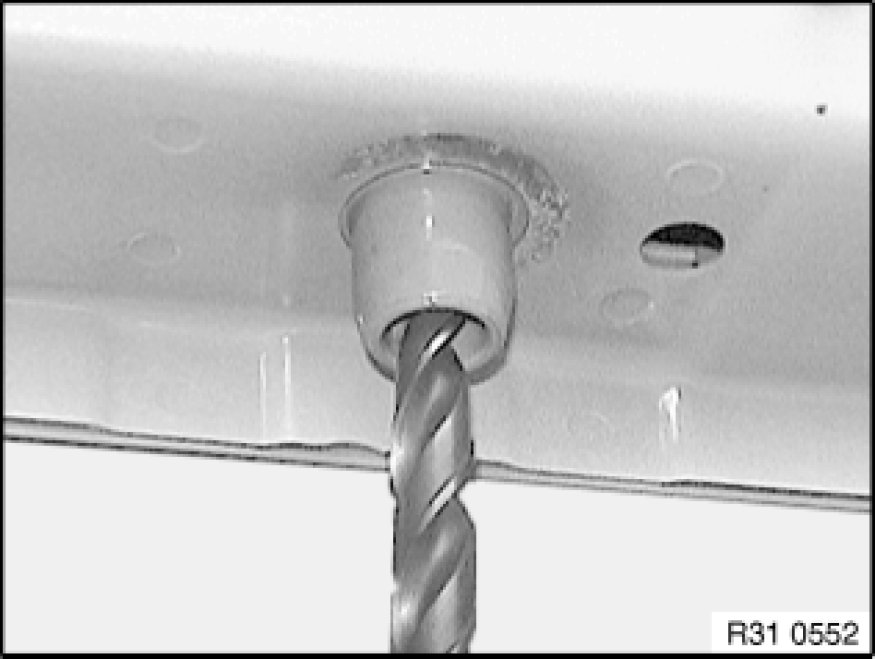
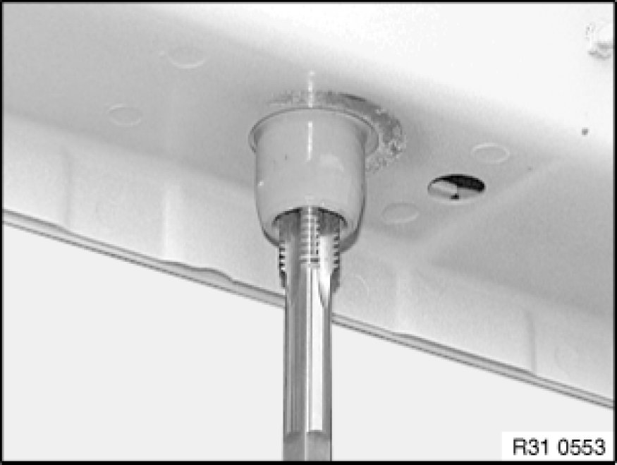
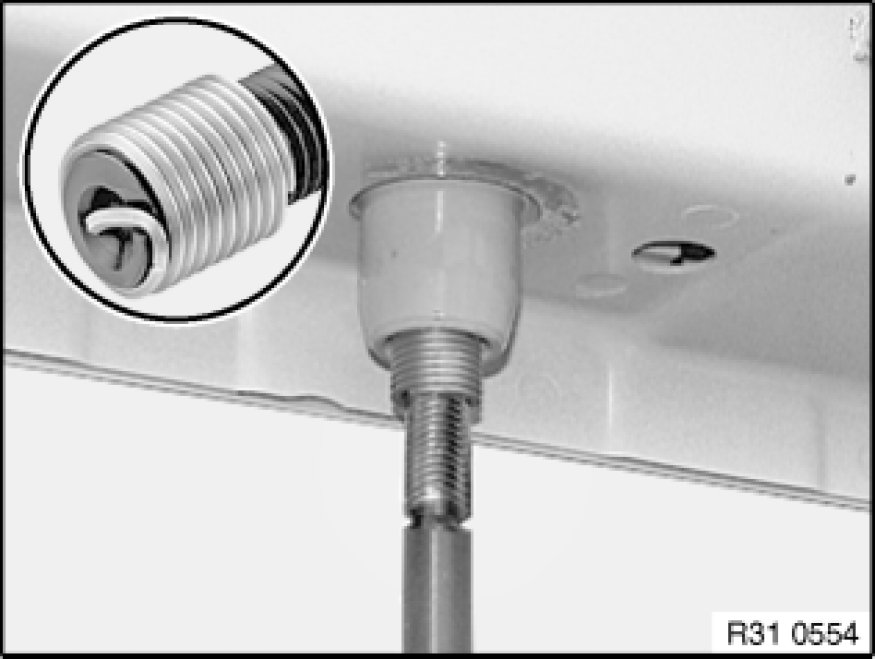
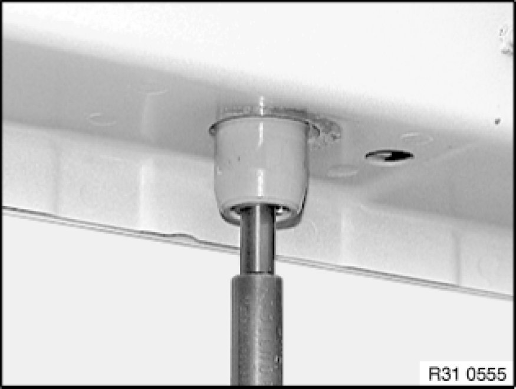

Suspension: Service and Repair
31 00 ... - Notes on repairing threads

Important!
Install Helicoil thread inserts so that they are flush with the original thread.
Note:
Damaged threads in engine carrier may be repaired with Helicoil thread inserts. Comply with the procedure described in the example.

Procedure:
1. - Create a clean core hole; if necessary, drill out screw remnants

2. - Create locating thread for Helicoil thread insert

3. - Pick out Helicoil thread insert in accordance with the table and screw into the locating thread until flush with the original thread

4. - Break drive pin and remove